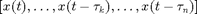
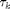

User-provided partial derivatives of state-dependent delays
Implementation for tutorial demo neuron:
function dtau=sd_dtau(k,xx,par,nx,np)
Inputs
- k (integer): the index k of the delay for which the derivative is requested
- xx (array with sys_ntau()+1 columns): values of states 
- par: row vector of system parameters
- nx (integer or vector of two integers): index wrt which element of xx  has to be differentiated
- np (integer): index wrt to which element of par has to be differentiated
Output dtau: partial derivative of wrt
- xx(:,nx) if nx is scalar and np is empty (dtau is row vector of length size(xx,1)),
- par(:,np) if nx is empty and np is scalar (dtau is scalar),
- xx(:,nx(1)) and xx(nx(2) if nx has length2 and np is empty (|dtau is square matrix of size(xx,1)),
- xx(:,nx(1)) and par(np if nx and np have length 1 (|dtau is row vector of length size(xx,1)).
If a user-provided function sys_dtau is not provided, DDE-Biftool will use finite-difference approximation (implemented in df_derit.m).
% (c) DDE-BIFTOOL v. 3.1.1(20), 11/04/2014
Contents
function dtau=sd_dtau(delay_nr,xx,par,nx,np)
Parameter vector
p1 p2 p3 p4 p5 p6 p7 p8 p9 p10 p11
n=size(xx,1);
nvec=size(xx,3);
if length(nx)==1 && isempty(np)
first order derivatives wrt state variables:
dtau=zeros(1,n,nvec);
if nx==0 % derivative wrt x(t)
if delay_nr==3
dtau(1,2,:)=par(5)*par(10)*xx(2,2,:);
elseif delay_nr==4
dtau(1,1,:)=xx(2,3,:)./(1+xx(1,1,:).*xx(2,3,:)).^2;
elseif delay_nr==5
dtau(1,4,:)=1;
elseif delay_nr==6
dtau(1,5,:)=1;
end
elseif nx==1 % derivative wrt x(t-tau1)
if delay_nr==3
dtau(1,2,:)=par(5)*par(10)*xx(2,1,:);
end
elseif nx==2 % derivative wrt x(t-tau2)
if delay_nr==4
dtau(1,2,:)=xx(1,1,:)./(1+xx(1,1,:).*xx(2,3,:)).^2;
end
end
elseif isempty(nx) && length(np)==1,
First order derivatives wrt parameters
dtau=zeros(1,nvec);
if delay_nr==1 && np==10
dtau(1,:)=1;
elseif delay_nr==2 && np==11
dtau(1,:)=1;
elseif delay_nr==3 && np==5
dtau(1,:)=par(10)*xx(2,1,:).*xx(2,2,:);
elseif delay_nr==3 && np==10
dtau(1,:)=par(5)*xx(2,1,:).*xx(2,2,:);
end
elseif length(nx)==2 && isempty(np),
Second order derivatives wrt state variables
dtau=zeros(n,n,nvec);
if delay_nr==3
if (nx(1)==0 && nx(2)==1) || (nx(1)==1 && nx(2)==0)
dtau(2,2,:)=par(5)*par(10);
end
elseif delay_nr==4
if nx(1)==0 && nx(2)==0
dtau(1,1,:)=-2*xx(2,3,:).*xx(2,3,:)./(1+xx(1,1,:)*xx(2,2,:)).^3;
elseif nx(1)==0 && nx(2)==2
dtau(1,2,:)=(1-xx(1,1,:).*xx(2,3,:))./(1+xx(1,1,:).*xx(2,2,:)).^3;
elseif nx(1)==2 && nx(2)==0
dtau(2,1,:)=(1-xx(1,1,:).*xx(2,3,:))./(1+xx(1,1,:).*xx(2,2,:)).^3;
elseif nx(1)==2 && nx(2)==2
dtau(2,2,:)=-2*xx(1,1,:).*xx(1,1,:)./(1+xx(1,1,:).*xx(2,2,:)).^3;
end
end
elseif length(nx)==1 && length(np)==1,
Mixed state parameter derivatives
dtau=zeros(1,n,nvec);
if delay_nr==3
if nx==0 && np==5
dtau(1,2,:)=par(10)*xx(2,2,:);
elseif nx==0 && np==10
dtau(1,2,:)=par(5)*xx(2,2,:);
elseif nx==1 && np==5
dtau(1,2,:)=par(10)*xx(2,1,:);
elseif nx==1 && np==10
dtau(1,2,:)=par(5)*xx(2,1,:);
end
end
end
Otherwise raise error
Raise error if the requested derivative does not exist
if isempty(dtau) error(['SYS_DTAU, delay %d: requested derivative ',... 'nx=%d, np=%d does not exist!'],delay_nr, nx, np); end
end